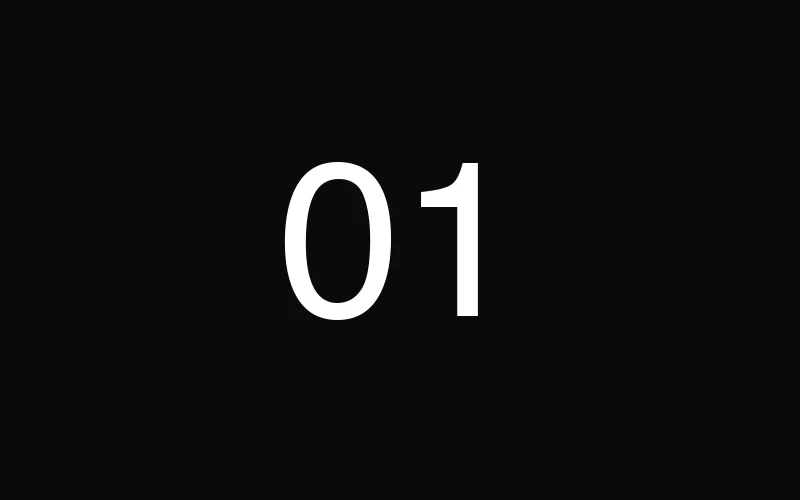
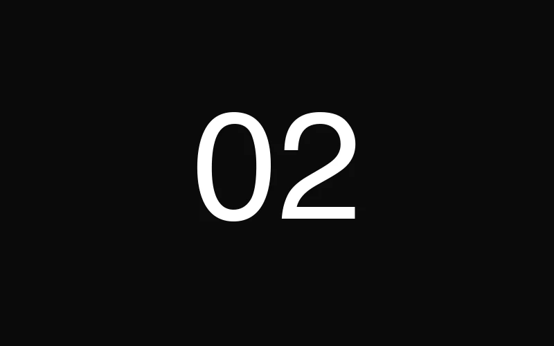
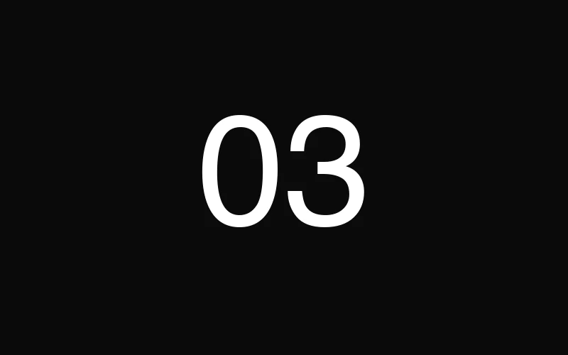
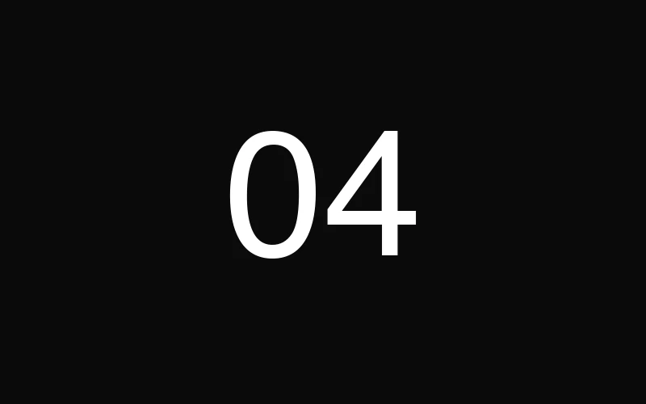
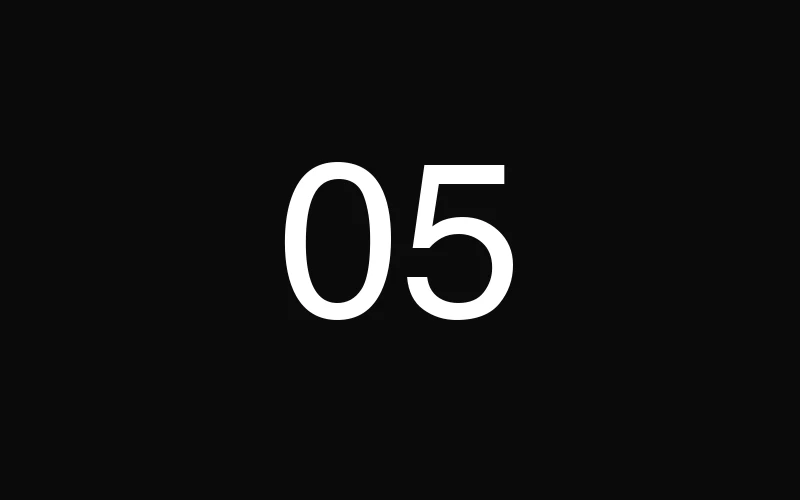
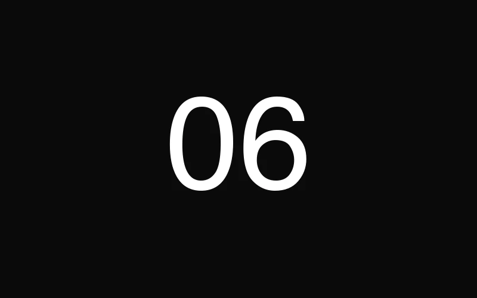
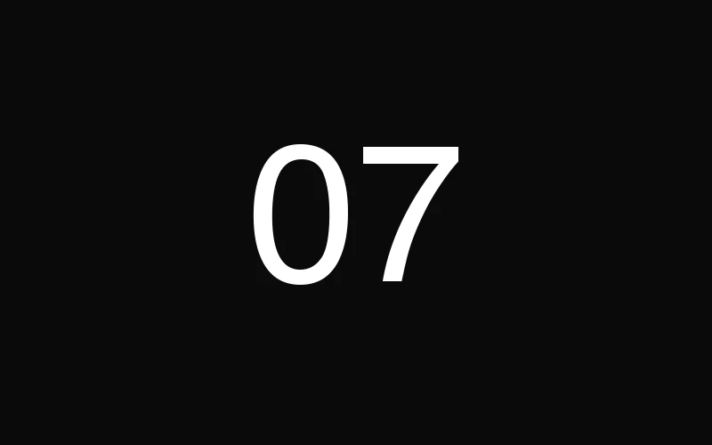
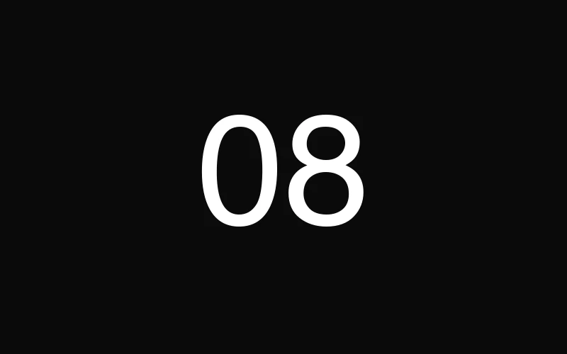
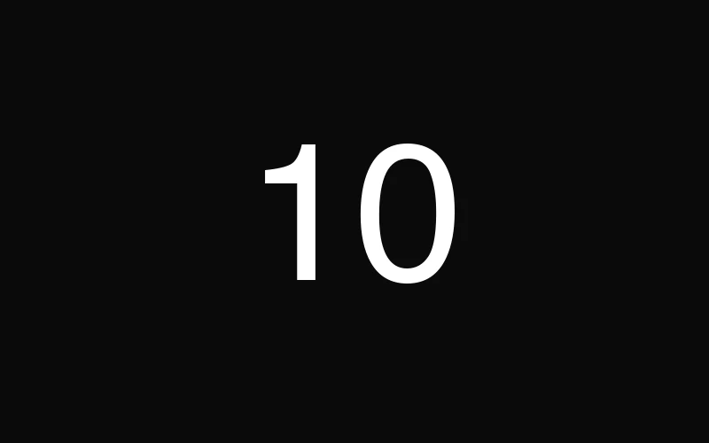

Pyramide du Louvre

Il y a un avant et un après la première fois qu'on entre sous la Pyramide un soir de gala, quand les lumières du Louvre se reflètent sur le verre et que Paris semble avoir été construite juste pour ce moment. C'est, tout simplement, l'adresse la plus prestigieuse du monde pour un événement. Et on ne dit pas ça à la légère.
La logistique est à la hauteur du lieu : contraintes de sécurité du musée, accès par le Carrousel, coordination avec la RMN-GP, temps de montage ultra-encadré. En résumé, ce n'est pas un lieu qu'on "réserve" — c'est un lieu qu'on mérite, brief par brief. Chez Dare-Dare, on a eu ce privilège pour la Paris Blockchain Week, en produisant un dîner de gala pour 600 convives sous la Pyramide. La scénographie jouait sur la transparence du verre et la pierre dorée de la cour Napoléon. L'effet ? Des standing ovations avant même le premier discours.
Palais Brongniart

L'ancienne Bourse de Paris est devenue l'un des lieux événementiels les plus polyvalents de la capitale. Colonnes corinthiennes, nef majestueuse, salons périphériques intimistes — le Palais Brongniart offre une palette rare. On peut y accueillir un lancement tech pour 200 personnes dans le salon d'honneur comme un congrès de 2000 participants dans la grande nef.
Ce qu'on aime particulièrement, c'est la flexibilité scénographique. Les volumes permettent des mises en scène ambitieuses sans écraser l'architecture. On l'a vécu de l'intérieur lors d'une activation pour Moët & Chandon produite par Dare-Dare : une scénographie immersive qui transformait la nef en vignoble champenois, avec un mapping architectural sur les colonnes et un bar à champagne suspendu. Le Palais a cette capacité unique à se réinventer à chaque événement tout en imposant immédiatement sa noblesse. C'est le lieu des premières impressions réussies.
Piscine Molitor

Si Instagram avait un lieu physique, ce serait Molitor. Les cabines Art déco, le bassin d'hiver aux vitraux multicolores, le rooftop avec vue sur Roland-Garros — chaque angle est un contenu prêt à poster. C'est le terrain de jeu idéal pour les activations influence, les lancements produit lifestyle et les soirées où la scénographie doit être native social media.
On connaît Molitor par cœur : ses contraintes acoustiques (le bassin résonne), ses flux de circulation (on passe par le spa, attention), ses heures de lumière magique (17h-18h30 en été sur le bassin extérieur). Pour les activations Samsung Influences produites par Dare-Dare, on a exploité le bassin d'hiver comme un studio géant, avec des installations interactives dans chaque cabine et un photocall immersif au bord de l'eau. Résultat : un taux d'engagement trois fois supérieur aux benchmarks du secteur. Molitor, c'est la garantie que vos invités deviennent vos ambassadeurs.
Le Ritz Paris

Le Ritz, c'est l'anti-volume. Ici, on ne cherche pas à impressionner par la taille mais par la densité : chaque détail — du pli de la nappe au grammage de la carte de menu — raconte une histoire de perfection. Pour un petit-déjeuner VIP, un dîner de networking C-level ou un board meeting confidentiel, il n'existe tout simplement pas de meilleur écrin à Paris.
Le Salon Proust, le Salon Psyché, les jardins intérieurs — chaque espace a sa personnalité et sa jauge. On privilégie le Salon César pour les formats de 50 à 80 personnes, avec un cocktail dînatoire qui permet de circuler entre les pièces. Pour le networking VIP de la Paris Blockchain Week produit par Dare-Dare, on y a organisé un breakfast exclusif réunissant 120 décideurs du Web3. Le niveau de conversation était à la hauteur du lieu : intime, décisif, mémorable. Le Ritz crée un sentiment d'appartenance immédiat — vos invités comprennent, dès la porte, qu'ils font partie d'un cercle.
Carrousel du Louvre

Quand le brief dit "grand", le Carrousel du Louvre répond "XXL". Avec ses 10 000 m² modulables sous la Pyramide inversée, c'est le lieu des événements qui pensent en milliers de participants. Salons professionnels, conventions d'entreprise, congrès internationaux — le Carrousel offre une infrastructure technique de niveau mondial tout en gardant l'adresse la plus iconique de Paris.
Mais attention : grand ne veut pas dire facile. La modularité du Carrousel est un atout et un piège. Mal exploité, l'espace peut sembler froid, impersonnel, "salon-like" au mauvais sens du terme. Tout est dans le zoning, la signalétique et la scénographie des espaces interstitiels. On le sait parce qu'on l'a vécu à l'échelle maximale : pour Deloitte, Dare-Dare a produit un événement rassemblant 20 000 personnes au Carrousel. Gestion des flux, expériences par zones, restauration à grande échelle — un défi logistique transformé en expérience fluide. Le Carrousel, c'est le lieu où l'ambition rencontre l'exécution.
Moulin Rouge

Oubliez le cliché touristique. Le Moulin Rouge en privatisation, c'est une tout autre expérience. La salle mythique se transforme en un cabaret exclusif où vos invités deviennent le public d'un spectacle créé pour eux. Les ailes rouges, la scène, les balcons — tout respire la fête, le glamour et l'audace. C'est le lieu des soirées dont on parle encore six mois après.
La privatisation offre des possibilités que peu de gens soupçonnent : personnalisation du spectacle, intégration de contenus corporate dans la revue, dîner-spectacle avec menu sur mesure, accès backstage pour les VIP. Pour la soirée de la Paris Blockchain Week, Dare-Dare a privatisé le Moulin Rouge et orchestré une soirée de 600 convives mélangeant show, DJ set et networking. Le French Cancan a ouvert la soirée, mais c'est le after sur scène qui a fait exploser les réseaux sociaux. Le Moulin Rouge, c'est la permission de faire la fête — avec panache.
Tour Eiffel (salons privés)

Organiser un événement dans la Tour Eiffel, c'est le rêve de beaucoup de clients — et le cauchemar logistique de beaucoup de producteurs. Les salons Gustave Eiffel, au premier étage, offrent une vue panoramique sur le Trocadéro et le Champ-de-Mars qui coupe le souffle, même aux Parisiens les plus blasés. C'est l'adresse "signature" par excellence — celle qui fait la couverture des rapports annuels.
Mais soyons transparents : la Tour Eiffel est le lieu le plus contraignant de cette liste. Dossiers de sécurité à déposer des mois en avance, accès matériel strictement encadré, pas de monte-charge pour les décors volumineux, couvre-feu sonore, zones de survol de drones interdites. Chaque événement est une opération quasi-militaire. C'est précisément pour cela qu'il faut un producteur expérimenté, qui connaît les interlocuteurs SETE, les délais administratifs et les solutions créatives pour travailler dans l'enveloppe de contraintes. Le résultat, quand tout est maîtrisé, est absolument inoubliable.
Musée d'Orsay

Imaginez un dîner de gala sous la grande verrière de l'ancienne gare d'Orsay, les Renoir et les Monet éclairés en arrière-plan, la lumière naturelle du crépuscule filtrant à travers la grande horloge. Le Musée d'Orsay est peut-être le lieu le plus émotionnellement puissant de Paris pour un événement. L'art n'est pas un décor — il est le décor.
La nef centrale, avec ses 138 mètres de long et ses 32 mètres sous verrière, peut accueillir jusqu'à 1500 personnes en format cocktail. Les galeries latérales offrent des espaces de networking naturels, où les conversations se font entre un Cézanne et un Van Gogh. Le défi principal est acoustique : la réverbération de la nef nécessite un traitement sonore professionnel pour les discours et la musique. On recommande également des éclairages sur mesure qui respectent les normes de conservation tout en sublimant l'architecture. C'est un lieu qui demande du respect et de la finesse — et qui rend au centuple l'attention qu'on lui porte.
Hôtel de Ville
Le parvis de l'Hôtel de Ville est la plus grande "scène" en plein air du centre de Paris. Patinoire en hiver, écran géant pendant les grands événements sportifs, concerts gratuits en été — c'est le lieu de la ville qui parle à tout le monde. Pour les marques qui veulent toucher le grand public dans un cadre institutionnel, il n'y a pas d'équivalent.
À l'intérieur, les salons d'apparat — Salon des Arcades, Salle des Fêtes, Salon des Lettres — rivalisent avec Versailles en termes de dorures et de magnificence. Mais c'est dehors, sur le parvis, que la magie opère pour les activations grand public. Dare-Dare l'a démontré avec l'activation Samsung × Fnac Live : une expérience immersive en plein air qui a attiré des milliers de visiteurs sur plusieurs jours, combinant concerts, démonstrations produit et espaces interactifs. L'Hôtel de Ville offre une légitimité institutionnelle que peu de lieux peuvent revendiquer — et un flux piéton naturel qui fait rêver n'importe quel directeur marketing.
Fondation Louis Vuitton

Le vaisseau de verre de Frank Gehry, posé au cœur du Bois de Boulogne, est un geste architectural si radical qu'il transforme n'importe quel événement en expérience sensorielle. Les voiles de verre, les terrasses suspendues, les bassins d'eau — tout ici est mouvement, lumière et surprise. C'est le lieu des marques qui veulent associer leur image à l'audace créative et au luxe contemporain.
Les espaces privatisables incluent l'auditorium (350 places), les galeries d'exposition et les terrasses panoramiques avec vue sur le Jardin d'Acclimatation et la skyline de La Défense. Le graal, c'est la terrasse du dernier niveau au coucher du soleil — un moment de grâce pure. La Fondation impose un cahier des charges exigeant en termes de scénographie (rien ne doit altérer l'architecture), mais cette contrainte est en réalité un cadeau : elle force à la sobriété, et la sobriété dans un lieu aussi expressif produit des résultats spectaculaires. C'est l'adresse vers laquelle on oriente les clients qui veulent marquer les esprits sans jamais en faire trop.